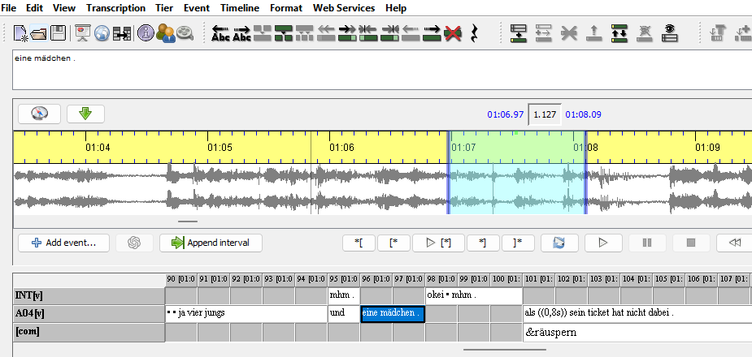
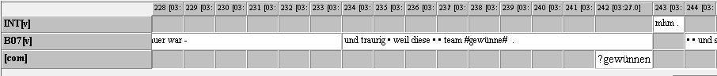
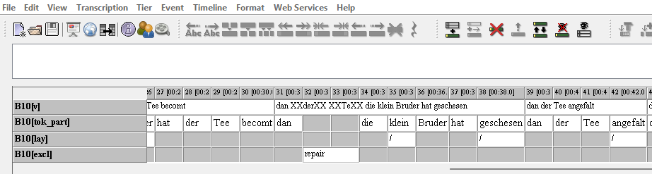
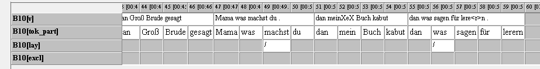

3 Transkription
Dieses Kapitel dokumentiert das Vorgehen bei der Transkription der Daten. Allgemeine Grundlagen werden in Kapitel 3.1 dargestellt, während das Vorgehen für mündliche Texte in Kapitel 3.2 sowie für schriftliche Texte in Kapitel 3.3 differenziert wird.
3.1 Grundlagen der Transkription
Zur Transkription der Audioaufnahmen sowie der Scans der handschriftlichen Texte der Schüler:innen wurde der EXMARaLDA-Partitur-Editor1 (Schmidt & Wörner, 2014) genutzt.
Der Wortlaut der mündlichen wie schriftlichen Äußerungen wurde grundsätzlich in einfacher orthographischer Transkription wiedergegeben. Die Extension einer Äußerungseinheit entspricht dabei im Regelfall einem Event. (Bei Äußerungen, die durch viele Pausen unterbrochen werden oder bei Überlappungen mit Äußerungen der Interviewer:innen kann es an einzelnen Stellen nötig sein, Äußerungseinheiten in mehr als einem Event darzustellen. Für eine konsistente Segmentierung in Äußerungseinheiten vgl. Kapitel 4.)
Es gilt zu beachten, dass jede Transkription immer auch eine Interpretation des Gehörten sowie des schriftlichen Textes durch die Transkribierenden darstellt und notwendigerweise eine Reduktion des Gesamtumfangs der sprachlichen Äußerungen bedeutet (z.B. Verlust bestimmter intonatorischer Eigenschaften etc.). Transkriptionskonventionen dienen dazu, diese möglichst zu vereinheitlichen, zu vereinfachen und allgemein interpretierbar zu machen. Die Konventionen der SeiKo-Transkriptionen werden in Kapitel 3.2 für die gesprochenen und in Kapitel 3.3 für die geschriebenen Texte dargestellt.
Für jeden Text(teil) einer Datenerhebung (Narrative, Questions, Decontext, Text) einer Schüler:in werden verschiedene EXMARaLDA-Dateien angelegt. Die Dateinamen setzen sich aus folgenden Informationen zusammen:
ERHEBUNGSZEITPUNKT_SCHÜLER:IN-ID_STORY_INTERVIEWTEIL >> z.B. E04_A06_Busticket_T
(In der Metadatenübersicht sind diese Informationen als ERHEBUNG, PROBANDIN, STORY, PART zu finden.)
Grundsätzlich wurden die Produktionen der Schüler:innen und der Interviewer:innen je in einer eigenen Transkriptionsspur dargestellt. (Die Spuren enthalten dabei folgende Pseudonyme als Sprecher:innen-ID zugewiesen: [INT] für die Interviewer:in, sowie eine individuelle ID - z.B. [B02] - für die Schüler:innen.) Nicht durch die Transkriptionskonventionen darstellbare Auffälligkeiten (z.B. Störgeräusche, Sprechqualität) oder alternative Transkriptionen wurden auf einer separaten Spur ([com]) vermerkt.
Sensible Textstellen (z.B. Nennung von Namen, Orten etc.) wurden in der Transkription pseudonymisiert wiedergegeben (z.B. NAME, ORT). In den Audioaufnahmen wurden solche Stellen durch Verrauschen unkenntlich gemacht. Eine Anonymisierung der Daten durch vollständige Verfremdung stimmlicher Merkmale (vgl. hierzu z.B. Meyermann & Porzelt, 2014) kann nicht vorgenommen werden, da die Daten sonst für viele linguistische Analysen nicht mehr nutzbar wären. (Zum Zugang zur vollständig pseudonymisierten und damit “stummen” Korpusversion sowie den Möglichkeiten zur Nutzung der Audiodaten vgl. Kapitel 10.)
Zur Sicherung der Qualität der Transkriptionen wurden alle Transkripte nach dem Vier-Augen-Prinzip von einem zweiten Teammitglied nachgehört oder überprüft. (Für eine Übersicht der qualitätssichernden Maßnahmen vgl. Kapitel 8.)
3.2 Transkription gesprochener Daten
Für die Transkription gesprochener Texte werden zunächst eigene Transkriptionsspuren für Schüler:in und Interviewer:in angelegt. Abbildung 3.1 zeigt eine typische Ansicht einer EXMARaLDA-Datei während der Transkription.

3.2.1 Äußerungsnahe Wiedergabe des Gesagten
Äußerungen wurden inklusive subordinierter Äußerungen in einfacher orthographischer Transkription wiedergegeben (vgl. hierzu die Modifikationen von Schellhardt & Schroeder, 2015; zu HIAT vgl. Rehbein et al., 2004). Großbuchstaben wurden dabei nicht verwendet. Subordination wird mit , kenntlich gemacht. Die Transkriptionszeichen (. , ? und !) wurden für die Unterscheidung von deklarativen, interrogativen oder exklamativen Äußerungen genutzt. Entscheidend für die Zuordnung war neben der Intonation der Sprecher:innen auch die Interpretation durch die Transkribend:in. Wurde die finale Tonhöhenbewegung am Ende der Äußerung gehalten, wurde - transkribiert. Eventgrenzen wurden nach den gehörten Äußerungseinheiten gesetzt. (Längere Pausen, Störgeräusche u.a. sowie Überlappungen können auch in eigenen Events abgesetzt sein.)
Gesprochensprachliche Phänomene wurden möglichst originalgetreu wiedergegeben. Beispiele: und er hat ein punkt für sein team (E02_B02) ne andere person (E02_A05)
Systematische (und obligatorische) Reduktionen der gesprochenen Sprache wurden nach orthographischen Standards transkribiert. Auch leichte sprachliche Verschleifungen wurden aufgelöst (z.B. und dann, nicht undann, ich, nicht isch).
Fremdsprachiges Material wurde möglichst originalgetreu wiedergegeben und pro Wort mit [] markiert. Beispiel: mit [tea] [and] buch (E01_B07)
Buchstabierte Abkürzungen wurden ohne Leerzeichen zwischen den Buchstaben ergänzt.
3.2.2 Unverständliches und Unklares
Für unklare Äußerungen, die mit # annotiert werden, ist potentiell eine alternative Transkription auf [com] angegeben. Diese ist mit einem vorangestellten ? markiert.
Beispiel:

Gänzlich unverständliche Passagen wurden mit XXX markiert. Beispiel: die eine mann hat eis XXX mit hände (E02_B10)
3.2.3 Pausen
Zur vereinfachten Darstellung von Pausen wurden Pausenzeichen und exakte Angaben der Pausenlänge verwendet.
Ein kurzes Stocken im Redefluss kann mit einem Punktzeichen • transkribiert werden.
Eine Pause mit einer geschätzten Länge von bis zu einer halben Sekunde wird mit zwei Punktzeichen •• , eine geschätzte Pause von bis zu einer dreiviertel Sekunde mit drei Punktzeichen ••• transkribiert.
Längere Pausen wurden gemessen und numerisch in Doppelklammern angegeben. (z.B. ((2.5)) oder ((2.5s))
Pausen innerhalb eines Wortes wurden auf [com] notiert.
Beispiel: kon((••))trolleur (E10_B11)
3.2.4 Abbrüche und Selbstkorrekturen
Abbrüche auf Wortebene wurden mit / unmittelbar am Wortende transkribiert.
Beispiel: im fahrrad steckt ei/ ein tüte (E15_B08)
Satzabbrüche wurden mit // am Ende des abgebrochenen Satzes und nach einem Leerzeichen markiert.
Beispiel: und dann // (E01_B09)
3.2.5 Überlappungen
Für überlappende Äußerungen wurde auf der jeweiligen Spur der Sprecher:innen der Audioabschnitt identifiziert und in entsprechenden Events transkribiert. Anschließend wurden die Eventgrenzen so gesetzt, dass die Extension der Überlappung auch in der Transkription sichtbar wird, wobei einzelne Worte nicht auf verschiedene Events aufgeteilt wurden (vgl. Event 52 in Abbildung 3.1).
Wenn eine Sprecher:in unterbrochen wird, wurde die Unterbrechung als Pause und Überlappung transkribiert.
3.2.6 Paralinguistische Phänomene
Paralinguistische Phänomene wie Lachen, Flüstern etc. wurden auf [com] notiert und mit [&] markiert (z.B. &lachen oder &lachend).
3.2.6.1 Fragen, Rückversicherungen, Zögern
Fragen und Rückversicherungen wurden standardisiert mit mh ?, ne ? und hee ? wiedergegeben.
Markierung von Zögern (hesitation markers) und hörbares Nachdenken (turn holding) wurden mit em, mh, hm und ee transkribiert.
3.2.6.2 Zustimmung und Negation
Zustimmung wurde mit mhm, ehe, ah, aha, oke oder okei wiedergegeben.
Negation wurde als hmhm, eheh, nee transkribiert.
3.3 Transkription geschriebener Texte
Die Transkription der geschriebenen Texte erfolgte auf Grundlage der gescannten handschriftlichen Produktionen der Schüler:innen. Bei schriftlichen Texten wurde bereits während der Transkription eine Tokenisierung der Texte vorgenommen. Abbildung 3.3 zeigt daher eine Transkriptionsspur für den originalen Text in seinem ursprünglichen Wortlaut [v], eine tokenisierte Spur [tok_part], in denen von den Lerner:innen vorgenommene Selbstkorrekturen umgesetzt sind (vgl. dazu Kapitel 3.3.4.2) sowie eine Spur zur Wiedergabe des Textlayouts [lay] und eine Spur zur Darstellung von Korrekturen [excl]. Optional konnte die [com]-Spur zum Vermerken von Kommentaren eingesetzt werden.

3.3.1 Textnahe Wiedergabe
Analog zu den mündlichen Texte wurden auch die geschriebenen Texte der Schüler:innen möglichst originalgetreu wiedergegeben. Die Schreibweisen werden dokumentiert, d.h. Orthographie und Interpunktion wurden nicht verändert. Dabei wurde auch die jeweilige Groß- und Kleinschreibung berücksichtigt. Die Eventgrenzen orientieren sich an der Interpunktion der Schüler:innen.
3.3.2 Unleserliches
Unleserliches wurde möglichst pro Buchstabe mit @ wiedergegeben: z.B. ge@aufen.
3.3.3 Korrekturen
Korrekturen werden grundsätzlich auf der [v]/Transkriptionsspur erfasst. In den tokenisierten Spuren steht nur die finale Fassung des Textes vgl. dazu auch Kapitel 3.3.4.2.
Durchgestrichene Wörter wurden mit XX XX transkribiert (vgl. auch Event 32 in Abbildung 3.3).
Beispiel: XXgelauXX
Durchgestrichene Buchstaben wurden mit X X wiedergegeben (vgl. auch Abbildung 3.4).
Beispiel: geXeXlaufen
Nachträglich ergänzte Buchstaben wurden mit <> markiert (vgl. auch Abbildung 3.4).
Beispiel: ge<lau>en
Ein nachträglich eingefügtes Wort wurde mit < markiert.
Beispiel: ich <bin gelaufen
Bei mehreren nachträglich eingefügten Wörtern wurde vor jedem Wort die Einfügung mit < < kenntlich gemacht.
Beispiel: ich < <bin < <dann gelaufen

3.3.4 Tokenisierung im Transkriptionsprozess und zusätzliche Spuren
Schriftliche Texte wurden bereits im Transkriptionsprozess tokenisiert. Die tokenisierte Spur wurde anhand der in Kapitel 3.3.4.2 dargestellten Vorgaben angepasst. Außerdem wurde eine zusätzliche Spur mit Hinweisen zum Layout ([lay]) und zu ausgeschlossenem Material ([excl]) ergänzt.
3.3.4.1 Layout
Die [lay]-Spur umfasst eine Markierung des Zeilenendes, von Absätzen, Leerzeilen und Einrückungen.
Das Zeilenende wurde mit / unter dem Event des letzten Worts dieser Zeile markiert. Bei Worttrennung wurde die Trennung (z.B. gelau- / fen und /) unter dem letzten Wortbestandteil dargestellt.
Absätze und Leerzeilen wurden mit // im Event des letzten Worts im Absatz transkribiert.
Leichte Einrückungen wurden mit §, starke Einrückungen mit §§ im Event des eingerückten Worts bzw. des ersten eingerückten Worts wiedergegeben.
Große Lücken zwischen Wörtern wurden mit == im Event des Wortes nach dieser Lücke transkribiert.
3.3.4.2 Korrekturen als Vorbereitung für das automatische Tagging
Anders als bei der Transkription mündlicher Daten erfolgte für die schriftlichen Texte eine manuelle Korrektur der [tok_part]-Spur. Dies ist notwendig, um bessere Ergebnisse bei der automatischen Annotation (vgl. Kapitel 5) zu erzielen.
Korrekturtranskriptionen wie das Einfügen von Buchstaben oder Wörtern werden auf [tok_part] bereinigt. Vollständig korrigierte Wörter, die erkennbar von der Schreiber:in aus der “finalen Fassung” des Textes gestrichen wurden und nicht Teil der “letzten finalen Fassung des Textes” sein sollten, werden auf einer separaten Spur [excl] mit dem Tag repair markiert. Das heißt, [tok_part] enthält den Lerner:innentext in der “letzten Fassung”.